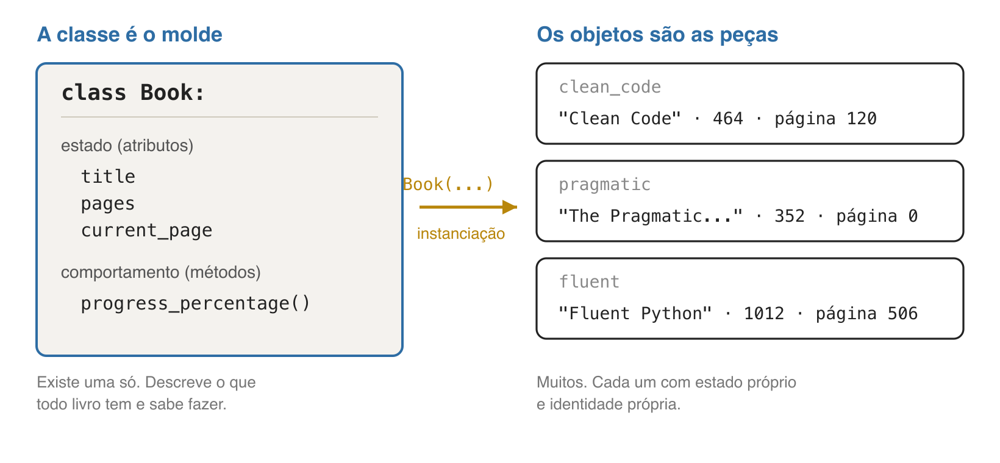
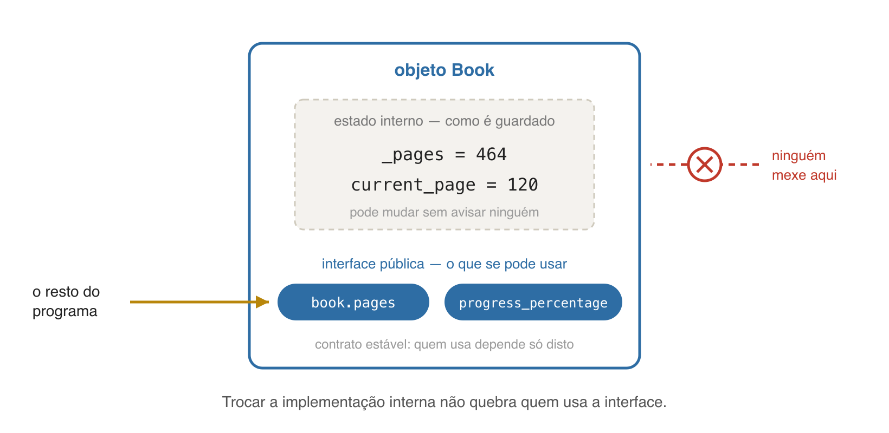
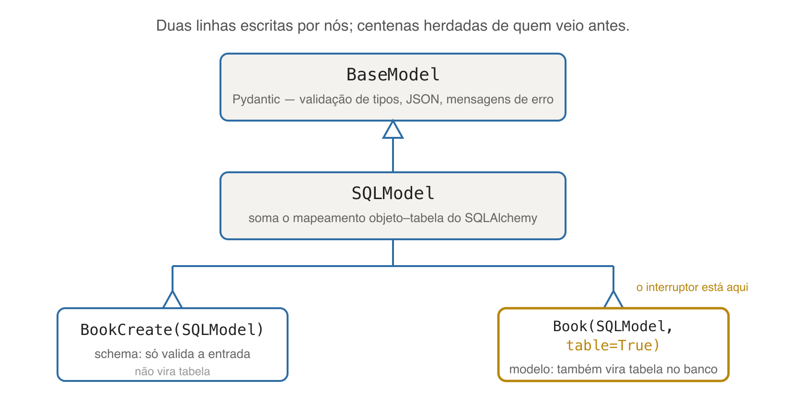
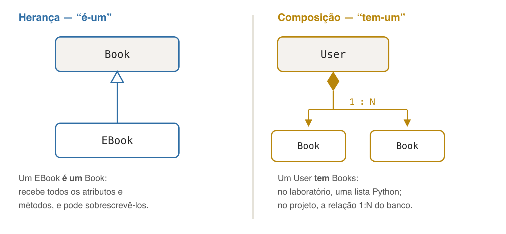

Programação Avançada — Aula 01.2
Aula complementar · Universidade Unirios
from fastapi import FastAPI
app = FastAPI()
@app.get("/")
def read_root():
return {"message": "Welcome to the Reading Tracker API"}
FastAPI é uma classe; FastAPI() cria um objeto;app é esse objeto; app.get é um método dele.projeto/backend/models.py — aula 05
class Book(SQLModel, table=True):
id: int | None = Field(default=None, primary_key=True)
title: str = Field(max_length=200)
pages: int
user_id: int = Field(foreign_key="user.id")
user: User | None = Relationship(back_populates="books")
Ao final desta aula, cada símbolo aqui deve ser legível.
self;Nenhuma linha entra no Reading Tracker hoje: é a base para lê-lo das aulas 03 em diante.
book = {"title": "Clean Code", "pages": 464, "current_page": 120}
def progress_percentage(book):
return book["current_page"] / book["pages"] * 100
book["titulo"] só explode em produção;class, objeto e herança;DAHL; NYGAARD. SIMULA 67 Common Base Language, 1968
KAY, A. The Early History of Smalltalk. ACM HOPL-II, 1993
BOOCH, G. Object-Oriented Analysis and Design with Applications, 3ª ed., 2007
>>> (5).__class__
<class 'int'>
>>> "abc".upper()
'ABC'
>>> type(print)
<class 'builtin_function_or_method'>
Números, textos, listas, funções e módulos: a linguagem é orientada a objetos desde a origem (Guido van Rossum, 1991).

class Book:
def __init__(self, title, pages):
self.title = title
self.pages = pages
self.current_page = 0
def progress_percentage(self):
return self.current_page / self.pages * 100
class Book: — declara um novo tipo; nome em CapWords (PEP 8);__init__ — o inicializador: roda ao criar o objeto e define seu estado inicial;self — o próprio objeto, primeiro parâmetro; não é palavra reservada, é convenção;self.title = title — sem o self., seria variável local que morre no fim da função.
clean_code = Book("Clean Code", 464)
pragmatic = Book("The Pragmatic Programmer", 352)
clean_code.current_page = 120
print(clean_code.progress_percentage()) # 25.86...
print(pragmatic.current_page) # 0
print(isinstance(clean_code, Book)) # True
print(clean_code is pragmatic) # False
Estado, comportamento e identidade — a definição de Booch, linha a linha.
self não é mágica
clean_code.progress_percentage() # forma usual
Book.progress_percentage(clean_code) # exatamente a mesma chamada
objeto.metodo() é açúcar sintático para Classe.metodo(objeto).
O self é apenas o primeiro argumento, passado pelo interpretador.
def __repr__(self):
return f"Book(title={self.title!r}, pages={self.pages})"
Sem __repr__
<__main__.Book object at 0x104f2b1d0>
Com __repr__
Book(title='Clean Code', pages=464)
Implementar __repr__, __str__, __len__, __eq__ faz o objeto se comportar como um tipo nativo.
RAMALHO, L. Fluent Python, 2ª ed., 2022 — o modelo de dados do Python
class Book:
genre = "unknown" # um só, compartilhado por todos
def __init__(self, title, pages):
self.title = title # um por objeto
Field(default_factory=datetime.now) e não default=datetime.now() — a segunda forma daria a mesma data a todos os livros.__init__ dá o estado inicial; self é o próprio objeto;objeto.metodo() = Classe.metodo(objeto);A ideia é anterior à própria POO: ocultamento de informação. Encapsulamento é essa ideia aplicada ao objeto.
PARNAS, D. On the Criteria To Be Used in Decomposing Systems into Modules. CACM, 1972

nome — público, faz parte da interface;_nome — uso interno, "não mexa"; o interpretador não impede nada;__nome — sofre name mangling (vira _Classe__nome), o que evita colisão em herança.Nenhum dos três é segurança — são acordos entre pessoas que leem o código.
PEP 8 — Style Guide for Python Code
@property
def progress_percentage(self):
return round(self.current_page / self.pages * 100, 1)
@property
def is_finished(self):
return self.current_page >= self.pages
clean_code.current_page = 464
print(clean_code.progress_percentage) # 100.0 — sem parênteses
print(clean_code.is_finished) # True
Um valor calculado nunca fica desatualizado; um valor guardado mente até alguém lembrar de atualizá-lo.
@pages.setter
def pages(self, value):
if value <= 0:
raise ValueError("pages must be greater than zero")
self._pages = value
self._pages é um inteiro; amanhã pode vir de outra fonte — e book.pages continua funcionando;_nome), não trava;@property expõe dado derivado sem armazená-lo;
class EBook(Book):
def __init__(self, title, pages, file_format):
super().__init__(title, pages)
self.file_format = file_format
def __repr__(self):
return f"EBook(title={self.title!r}, format={self.file_format!r})"
super().__init__(...) — esquecê-lo é o erro mais comum: o objeto nasce sem title;__repr__ é sobrescrita: a versão da subclasse tem precedência.
fluent = EBook("Fluent Python", 1012, "epub")
fluent.current_page = 506
print(fluent.progress_percentage) # 50.0 — veio de Book
print(isinstance(fluent, Book)) # True — "é-um"
Python escolhe o método percorrendo a MRO (Method Resolution Order), visível em EBook.__mro__.
Se a subclasse quebra a expectativa da superclasse, a herança está errada — ainda que o código rode.
LISKOV, B. Data Abstraction and Hierarchy. OOPSLA, 1987

Documentação do Pydantic (Samuel Colvin, 2017) · Documentação do SQLModel
class BookCreate(BaseModel):
title: str
pages: int
Herdar de BaseModel traz de graça:
class BookBase(SQLModel):
title: str
pages: int
class BookCreate(BookBase):
pass
class BookRead(BookBase):
id: int
user_id: int
super() chama a superclasse; sobrescrever redefine comportamento;BaseModel → SQLModel → nossas classes.
library = [
Book("Clean Code", 464),
EBook("Fluent Python", 1012, "epub"),
]
for item in library:
print(item) # cada objeto se apresenta do seu jeito
A linguagem escolhe o método do tipo concreto em tempo de execução.
STRACHEY, C. Fundamental Concepts in Programming Languages, 1967 · CARDELLI; WEGNER, 1985
class Magazine: # não herda de Book
def __init__(self, name, pages):
self.name = name
self.pages = pages
self.current_page = 0
@property
def progress_percentage(self):
return round(self.current_page / self.pages * 100, 1)
"Se anda como um pato e grasna como um pato, é um pato" — duck typing.
def print_progress(item):
print(f"{item.progress_percentage}%")
print_progress(Book("Clean Code", 464)) # funciona
print_progress(Magazine("Superinteressante", 90)) # funciona também
raise HTTPException(status_code=404, detail="Book not found")
HTTPException é-uma Exception. É por ser subtipo que o raise funciona e que o FastAPI consegue capturá-la junto com qualquer outra exceção.

class User:
def __init__(self, name, email):
self.name = name
self.email = email
self.books = [] # tem-um (na verdade, tem-vários)
def add_book(self, book):
self.books.append(book)
@property
def finished_count(self):
return sum(1 for book in self.books if book.is_finished)
GAMMA; HELM; JOHNSON; VLISSIDES. Design Patterns, 1994
class User(SQLModel, table=True):
books: list["Book"] = Relationship(back_populates="user")
O que no laboratório é uma lista Python, no projeto é uma chave estrangeira mais uma relação do ORM. O desenho é o mesmo.
CHEN, P. The Entity-Relationship Model, 1976 — aprofundado na aula 05
User tem Books — a relação 1:N da aula 05.__init__ e sem self
class BookCreate(SQLModel):
title: str
pages: int
Nenhum inicializador, nenhum método — e ainda assimBookCreate(title="Clean Code", pages=464) funciona.
title: str não é atribuição — é anotação
>>> class BookCreate(SQLModel):
... title: str
... pages: int
...
>>> BookCreate.__annotations__
{'title': <class 'str'>, 'pages': <class 'int'>}
Nada é atribuído: a linha apenas registra que title tem o tipo str. A superclasse lê essas anotações e gera o inicializador, a validação e a conversão para JSON.
PEP 526 — Syntax for Variable Annotations, 2016 · PEP 484 — Type Hints, 2014
table=True é um argumento da definição da classe
class Book(SQLModel, table=True):
...
PEP 3115 — Metaclasses in Python 3000
def log_call(function):
def wrapper(*args, **kwargs):
print(f"calling {function.__name__}")
return function(*args, **kwargs)
return wrapper
@log_call
def read_health():
return {"status": "Ok"}
Recebe uma função e devolve algo no lugar dela.
PEP 318 — Decorators for Functions and Methods, 2004
@app.get não altera a função — ele a registra@property transforma o método num atributo calculado;@app.get("/health") devolve a função intacta e a anota na tabela de rotas do objeto app;FOWLER, M. Inversion of Control Containers and the Dependency Injection pattern, 2004
table=True é um interruptor lido pela metaclasse;@ é uma função que recebe outra função.
class Book(SQLModel, table=True):
id: int | None = Field(default=None, primary_key=True)
title: str = Field(max_length=200)
pages: int
user_id: int = Field(foreign_key="user.id")
user: User | None = Relationship(back_populates="books")
SQLModel, com o interruptor de tabela ligado;id: int | None — anotação de tipo lida pela superclasse;Field(...) configura a coluna; Relationship(...) é a composição 1:N.Author com name e country, e um __repr__ legível;Book receber um Author no __init__ (composição);AudioBook(Book) com duration_minutes e sobrescreva o __repr__;Library com add(book) e a propriedade average_progress (devolva 0.0 se estiver vazia);Erros previsíveis: super().__init__() esquecido; parênteses ao ler uma @property; divisão por zero na biblioteca vazia.
self é o próprio objeto, passado como primeiro argumento;@property expõe dado derivado sem armazená-lo;Na aula 01, digitamos um endereço e apareceu um JSON.
Guardem o incômodo: na aula 03, esses dicionários viram classes.